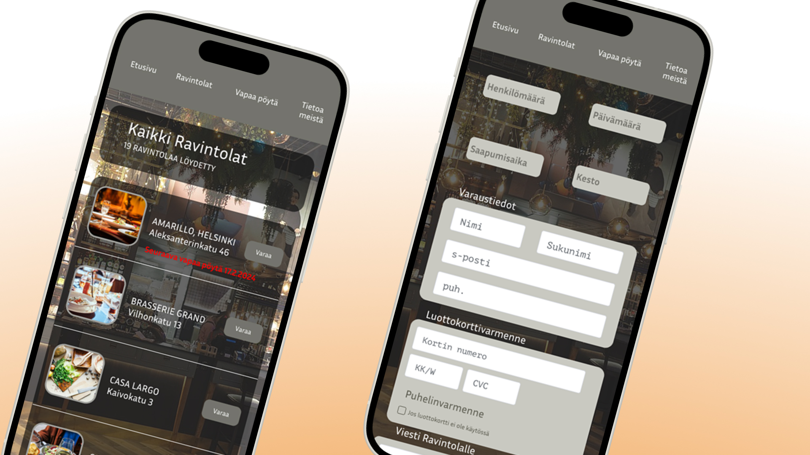
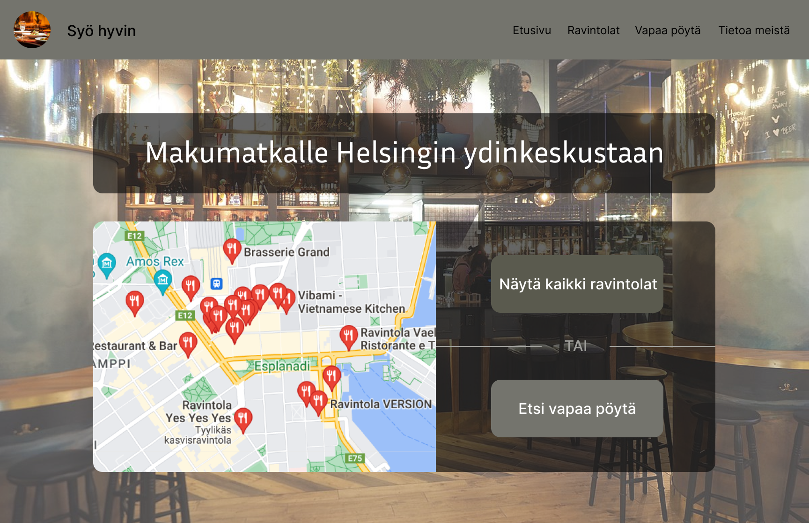
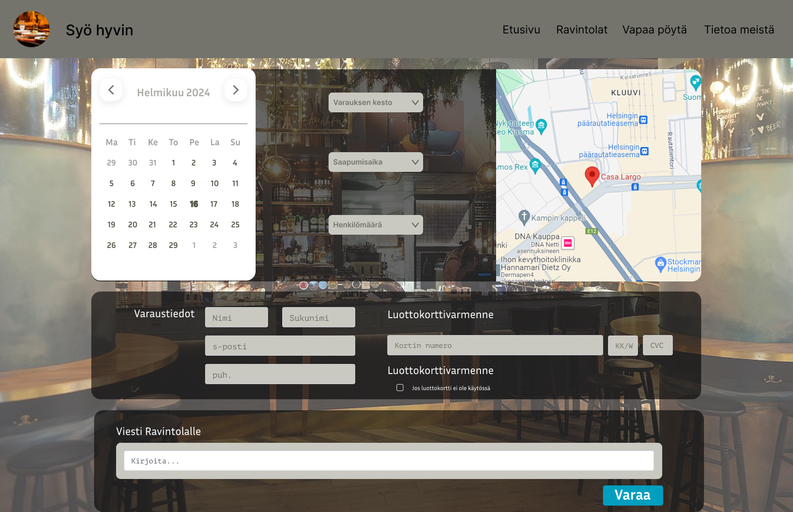
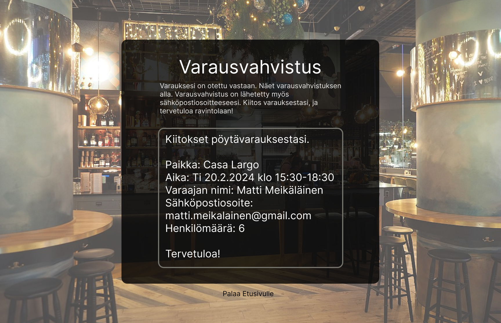

Ravintolan varaussivu
Kouluprojektissa suunnittelin ja toteutin kuvitteellisen ravintolan varaussivuston, joka mahdollisti pöytävaraukset eri Helsingin ravintoloihin yhdeltä alustalta. Toteutin projektin itsenäisesti, jotta oppimiseni olisi mahdollisimman tehokasta.
Lo-fi prototyyppi
Rakensin Balsamiq Wireframes -ohjelmalla matalan tarkkuuden prototyypin, jonka avulla sain hahmoteltua sivuston rakenteen.
Etusivu
Käyttäjä voi valita etusivulta, haluaako varata pöydän samalle päivälle vai myöhemmäksi.
Pöytien varaaminen
Jos käyttäjä päättää valita kaikki ravintolat, näyttää sivusto listan kaikista ravintoloista ja niiden kohdalla, joissa ei ole vapaita pöytiä sille päivälle, ilmoitetaan siinä, milloin pöytiä on seuraavan kerran varattavissa. Ja vapaat pöydät listaa vain ne ravintolat, joissa on heti varausmahdollisuus.
Varaustiedot
Käyttäjä valitsee päivän, saapumisajan, varauksen keston ja henkilömäärän. Väärinkäytösten estämiseksi varaus vahvistetaan luottokortilla. Vahvistusviesti sisältää kaikki oleelliset varaustiedot.
 Mobiiliversio
Suunnittelin erillisen mobiiliversion, jossa käytettävyys on optimoitu pienemmille näytöille.
Voit käydä kurkkaamassa protoa!
Ravintolan varaussivut